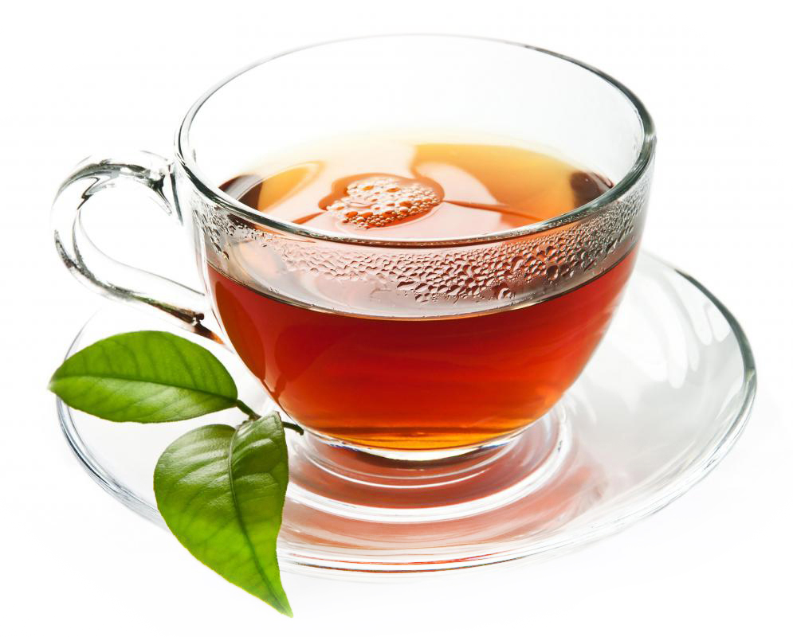

O café é uma bebida apreciada em todo o mundo, sendo conhecida principalmente pelo seu poder estimulante. Apesar de estar relacionado com maior energia e atenção, o café apresenta outros benefícios, mas, assim como qualquer bebida ou alimento, deve ser apreciado com moderação.

O chá é uma bebida preparada através da infusão de folhas, flores, raízes de planta do chá e geralmente é preparada com água quente. Cada variedade adquire um sabor definido de acordo com o processamento utilizado, que pode incluir oxidação, fermentação, e o contato com outras ervas, especiarias e frutos.
O leite é uma secreção de cor esbranquiçada produzida pelos mamíferos. Trata-se de um produto complexo que apresenta uma série de nutrientes importantes para o desenvolvimento inicial dos filhotes dos animais desse grupo de vertebrados. No leite são encontrados componentes como água, lipídios, proteínas, carboidratos, vitaminas e sais minerais.